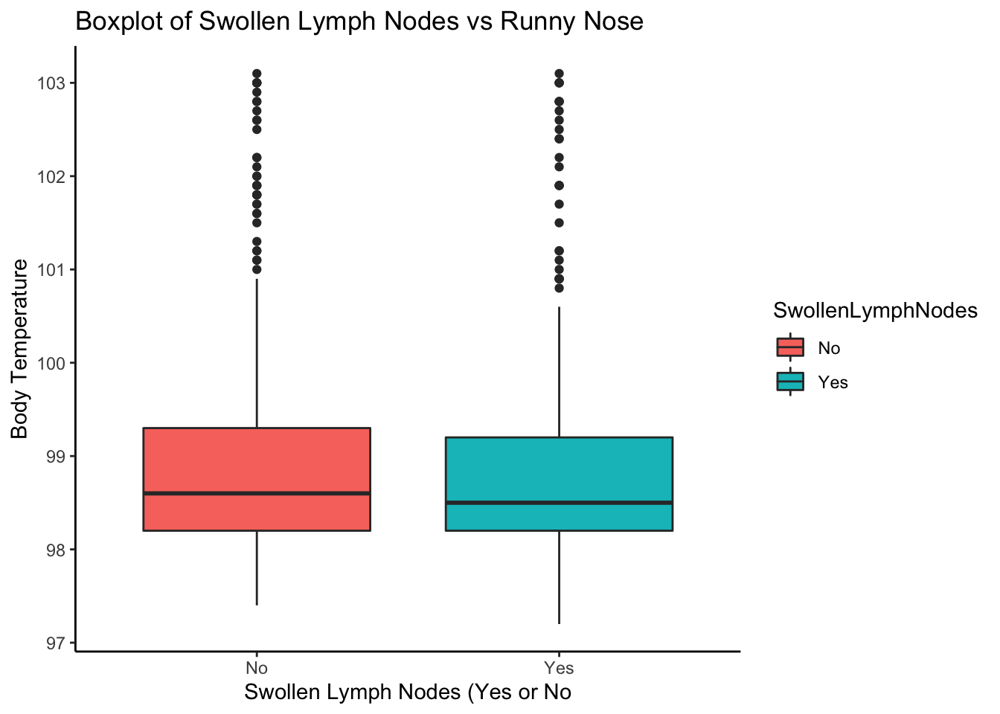

Flu Data Analysis: Exploration
Nicholas Mallis
11/8/2021
This is part of an analysis exercise I did in a Modern Applied Data Analysis course at UGA with Dr. Andreas Handel. We used data on flu patients You can find the full steps to data cleaning on more information here at the github page
###Data Loading and Cleaning
#load needed packages. make sure they are installed.
library(ggplot2) #for plotting
library(broom) #for cleaning up output from lm()
library(here) #for data loading/saving
library(tidyverse)
#path to data
#note the use of the here() package and not absolute paths
data_location <- here::here("files","processeddata.rds")
#load data.
mydata <- readRDS(data_location)
glimpse(mydata)## Rows: 730
## Columns: 26
## $ SwollenLymphNodes <fct> Yes, Yes, Yes, Yes, Yes, No, No, No, Yes, No, Yes, Y…
## $ ChestCongestion <fct> No, Yes, Yes, Yes, No, No, No, Yes, Yes, Yes, Yes, Y…
## $ ChillsSweats <fct> No, No, Yes, Yes, Yes, Yes, Yes, Yes, Yes, No, Yes, …
## $ NasalCongestion <fct> No, Yes, Yes, Yes, No, No, No, Yes, Yes, Yes, Yes, Y…
## $ Sneeze <fct> No, No, Yes, Yes, No, Yes, No, Yes, No, No, No, No, …
## $ Fatigue <fct> Yes, Yes, Yes, Yes, Yes, Yes, Yes, Yes, Yes, Yes, Ye…
## $ SubjectiveFever <fct> Yes, Yes, Yes, Yes, Yes, Yes, Yes, Yes, Yes, No, Yes…
## $ Headache <fct> Yes, Yes, Yes, Yes, Yes, Yes, No, Yes, Yes, Yes, Yes…
## $ Weakness <ord> Mild, Severe, Severe, Severe, Moderate, Moderate, Mi…
## $ CoughIntensity <ord> Severe, Severe, Mild, Moderate, None, Moderate, Seve…
## $ Myalgia <ord> Mild, Severe, Severe, Severe, Mild, Moderate, Mild, …
## $ RunnyNose <fct> No, No, Yes, Yes, No, No, Yes, Yes, Yes, Yes, No, No…
## $ AbPain <fct> No, No, Yes, No, No, No, No, No, No, No, Yes, Yes, N…
## $ ChestPain <fct> No, No, Yes, No, No, Yes, Yes, No, No, No, No, Yes, …
## $ Diarrhea <fct> No, No, No, No, No, Yes, No, No, No, No, No, No, No,…
## $ EyePn <fct> No, No, No, No, Yes, No, No, No, No, No, Yes, No, Ye…
## $ Insomnia <fct> No, No, Yes, Yes, Yes, No, No, Yes, Yes, Yes, Yes, Y…
## $ ItchyEye <fct> No, No, No, No, No, No, No, No, No, No, No, No, Yes,…
## $ Nausea <fct> No, No, Yes, Yes, Yes, Yes, No, No, Yes, Yes, Yes, Y…
## $ EarPn <fct> No, Yes, No, Yes, No, No, No, No, No, No, No, Yes, Y…
## $ Pharyngitis <fct> Yes, Yes, Yes, Yes, Yes, Yes, Yes, No, No, No, Yes, …
## $ Breathless <fct> No, No, Yes, No, No, Yes, No, No, No, Yes, No, Yes, …
## $ ToothPn <fct> No, No, Yes, No, No, No, No, No, Yes, No, No, Yes, N…
## $ Vomit <fct> No, No, No, No, No, No, Yes, No, No, No, Yes, Yes, N…
## $ Wheeze <fct> No, No, No, Yes, No, Yes, No, No, No, No, No, Yes, N…
## $ BodyTemp <dbl> 98.3, 100.4, 100.8, 98.8, 100.5, 98.4, 102.5, 98.4, …Descriptive Statistics: Tabling the Main Outcome(s) and Covariates using the table1 package
| Total (N=730) |
|
|---|---|
| Nausea | |
| No | 475 (65.1%) |
| Yes | 255 (34.9%) |
| BodyTemp | |
| Mean (SD) | 98.9 (1.20) |
| Median [Min, Max] | 98.5 [97.2, 103] |
| RunnyNose | |
| No | 211 (28.9%) |
| Yes | 519 (71.1%) |
| SwollenLymphNodes | |
| No | 418 (57.3%) |
| Yes | 312 (42.7%) |
| ChestCongestion | |
| No | 323 (44.2%) |
| Yes | 407 (55.8%) |
| Weakness | |
| None | 49 (6.7%) |
| Mild | 223 (30.5%) |
| Moderate | 338 (46.3%) |
| Severe | 120 (16.4%) |
| NasalCongestion | |
| No | 167 (22.9%) |
| Yes | 563 (77.1%) |
| Sneeze | |
| No | 339 (46.4%) |
| Yes | 391 (53.6%) |
| Fatigue | |
| No | 64 (8.8%) |
| Yes | 666 (91.2%) |
| SubjectiveFever | |
| No | 230 (31.5%) |
| Yes | 500 (68.5%) |
| Headache | |
| No | 115 (15.8%) |
| Yes | 615 (84.2%) |
###Plotting Nausea Here we see that 255 (34.9%) of participants reported nausea.
###Plotting Temperature The median body temperature was 98.5 with a minimum of 97.2 and a maximum of 103. Based on the histogram below, we see that the data seems to be skewed with a tail to the right.
###Plotting Runny Nose Here we see that 519 (71.1%) of participants reported experiecing a runny nose. 
###Plotting Body Temperature vs Runny Nose Here we see that the median(IQR) body temperature was lower in the group who experienced a runny nose was higher at 98.5(98.2-99.2) compared with those who did not experience a runny nose at 98.8 (98.2-99.6).
 ###Calculating Statistics on Body Temperature by Runny Nose Status
###Calculating Statistics on Body Temperature by Runny Nose Status
#define quantiles of interest
q = c(.25, .75)
#calculate quantiles by grouping variable
table <- mydata %>%
group_by(RunnyNose) %>%
summarize(mean= round(mean(BodyTemp), 1) ,
sd= round(sd(BodyTemp), 1),
median = round(median(BodyTemp, na.rm=TRUE), 1),
quant25 = round(quantile(BodyTemp, probs = q[1], na.rm=TRUE), 1),
quant75 = round(quantile(BodyTemp, probs = q[2], na.rm= TRUE), 1))
#i also combine the 25th percentile and 75th into a character string seperated by a "-"
table$IQR <- paste(table$quant25, table$quant75, sep = "-")
#then i add parentheses around it using this function
addparentheses <- function(x){paste("(", x, ")")}
table$IQR <- addparentheses(table$IQR)
# we don't need the first row or middle colums so we delete them
table <- table[, -c(5,6)]
names(table)[1] <- "Runny Nose Status"Now we display the table below
| Runny Nose Status | mean | sd | median | IQR |
|---|---|---|---|---|
| No | 99.1 | 1.3 | 98.8 | ( 98.2-99.6 ) |
| Yes | 98.9 | 1.1 | 98.5 | ( 98.2-99.2 ) |
###Plotting Swollen Lymph Nodes Here we see that 312 (42.7%) of participants reported experiecing swollen lymph nodes.
###Plotting Body Temperature by Swollen Lymph Nodes Here we see that the median body temperature was fairly close between those who reported swollen lymph nodes and those who did not. 
###Plotting Chest Congestion Here we see that 407 (55.8%) of participants reported experiecing chest congestion.
###Plotting Weakness Level Here we see that 120 (16.4%) reported severe weakness, 338 (46.3%) reported moderate weakness, and 223 (30.5%) reported mild weakness.